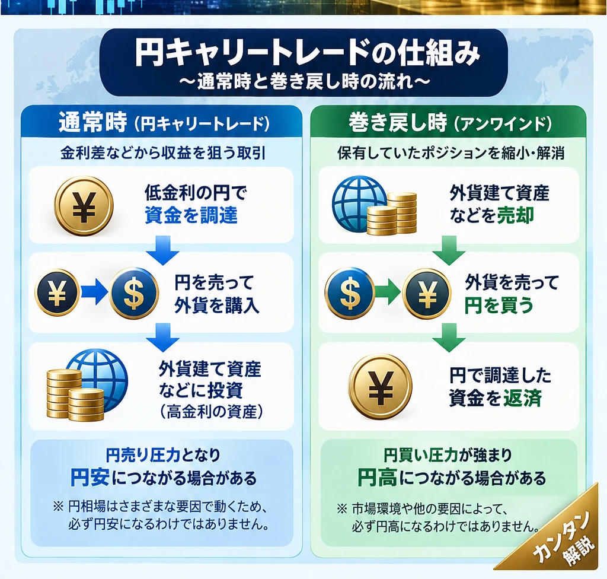

話題・トレンド｜金融市場の基礎知識
キャリートレードとは？金利差を利用した取引となぜ円相場が動くの？初心者向けに解説
ニュースで見かける「円キャリー解消で円高」「金利差縮小で巻き戻し」とは何でしょうか。資金の流れを追うと、円相場や株価との関係が見えてきます。ただし、金利差は確定利益ではなく、円高・円安の理由を一つに決めつけることもできません。

1. キャリートレードとは？
キャリートレード（Carry Trade）は、相対的に低いコストで資金を調達し、利回りの高い通貨や資産で運用して収益を狙う取引です。金利収益だけでなく、為替差損益や資産価格の変動が最終損益を左右します。
2. なぜ金利差を利用するの？
ただし実際には借入期間、為替ヘッジのコスト、取引手数料、信用条件などが関係します。特に為替ヘッジを行えば、金利差による見かけの有利さがヘッジコストで相殺されることがあります。
3. 金利差でどれくらい利益が出る？
| 説明用の架空例 | 年率 |
|---|---|
| 資金調達コスト | 1％ |
| 運用資産の利回り | 5％ |
| 単純な差 | 4％ |
この4％は費用・税金・為替・資産価格の変動を無視した説明上の差です。外貨の価値が円換算で約5％下がれば、金利差相当の収益を上回る損失が生じる場合があります。実際の円換算損益には複利的な換算や調達条件が関わるため、単純な「4％−5％」が厳密な結果ではありません。
政策金利差は、そのまま手取り利益や保証利回りにはなりません。
4. 円キャリートレードとは？
円を調達通貨に使い、外貨建ての債券・株式などへ投資する取引です。日本の資金調達金利が他国より相対的に低いとき、円が選ばれやすくなる場合があります。すべての円売りが円キャリーというわけではありません。
5. なぜ円キャリートレードで円安になることがあるの？
ただし為替は貿易決済、海外投資、金融政策、将来の予想、地政学的な要因でも動きます。「円安だから円キャリーが増えた」と断定することはできません。
6. キャリートレードの巻き戻しとは？
巻き戻し（アンワインド）は、これまで保有していたキャリートレードのポジションを縮小・解消することです。
多数の参加者が同時に解消すると、円買いが短期間に集中し円高を加速させる可能性があります。一方、ヘッジ済みの取引や円買いを伴わない解消もあり、すべての巻き戻しが同じ為替フローになるわけではありません。
7. なぜ突然巻き戻しが起こるの？
日米などの金利差縮小、日本の利上げ観測、海外の利下げ観測、株価急落、金融市場の急変、リスク回避、為替変動率の上昇がきっかけになります。借入を伴う取引では損失増加や証拠金不足から、本人の希望に関係なくポジションが解消されることもあります。
円高が損失を生み、解消のための円買いがさらに円高を招く、という連鎖が起きる場合があります。ただし実際の相場では複数の要因が重なります。
8. なぜ円高と株安が同時に起こることがあるの？
円キャリーを解消する過程で外貨建て株式などが売られ、同時に円が買われる場合があります。市場全体がリスク回避に傾いた結果、株安と円高が並行することもあります。しかし円高＝必ず株安、株安＝必ず円キャリー解消ではありません。企業収益、景気、金融政策も確認しましょう。
9. 日米金利差とキャリートレード
日米の調達金利差が拡大すれば円キャリーの魅力が意識され、縮小すれば解消への警戒が高まることがあります。ただし為替の予想変動や市場のボラティリティ、実際の借入条件も重要です。政策決定の背景は投資コラム一覧から「政策金利」「FOMC」「中立金利」の解説も参照してください。
10. 政策金利と長期金利のどちらを見るの？
短期で円を調達する取引では短期の資金調達金利が重要です。長期債を保有する場合は、その利回りや価格変動も関係します。政策金利と10年国債利回りを引き算して確定利益とみなすことはできません。期間の一致、調達条件、ヘッジコストを確認します。
11. レバレッジが危険性を高める理由
借入やレバレッジで自己資金より大きな取引をすると、小幅な為替変動でも自己資金に対する損失率が拡大します。証拠金不足による強制決済が他の参加者の損失や売却を誘発し、相場の動きを増幅することもあります。利益だけでなく損失も拡大します。
12. FXのスワップポイントとキャリートレードは同じ？
個人向けFXのスワップポイントは通貨間の金利差などを背景とする受け払いです。FX会社ごとの提示条件、需給、市場環境によって変動し、政策金利差と一致しません。機関投資家が借入・為替交換・資産運用を組み合わせるキャリートレードとは、資金調達手段やコスト構造が異なります。スワップ受取があっても為替差損が上回ることがあります。
13. 高金利通貨を買えば必ず利益になる？
なりません。高金利の背景に高インフレ、信用リスク、流動性不足などがある場合もあります。通貨が下落すれば利息相当の収益を超える損失が発生します。高金利や高スワップは安全性を意味しません。
14. キャリートレードと市場予想の関係
金融市場は実際の利上げ・利下げより前に、将来の金利見通しを織り込む場合があります。中央銀行のタカ派・ハト派姿勢、FOMC参加者の金利見通しを示すドットチャート、市場予想の変化は、キャリーの期待収益や円相場に影響し得ます。発表された政策金利だけを見て判断しないことが大切です。
15. 円キャリートレードの規模は分かるの？
市場全体の正確な規模を一つの統計で把握することは困難です。通貨先物の建玉、国際資金フロー、金融機関のポジション統計は参考になりますが、対象市場・参加者・取引手法が異なります。特に投機筋の円先物ポジション＝円キャリートレード全体ではありません。
16. キャリートレードのニュースを見るときのポイント
- どの通貨で資金調達しているか
- どの通貨・資産に投資しているか
- 実際の調達金利と運用利回りはどうか
- 将来の金融政策予想は変わったか
- 為替変動率は上昇したか
- 株式などのリスク資産はどう動いたか
- ポジション解消を示す根拠はあるか
- 円相場をキャリーだけで説明していないか
17. 直近の円キャリートレードに関する話題
この欄は定期更新用です。現時点で検証できていない最新の政策金利・為替水準・解消額は掲載していません。更新時は日本銀行、FRB、CFTC建玉統計などで対象日と数値を確認し、観測された市場変動と市場関係者の解釈を分けて記載します。
18. よくある質問（FAQ）
キャリートレードとは何ですか？
低コストで調達した資金を相対的に高利回りの通貨・資産に投資する取引です。
円キャリートレードとは何ですか？
円を調達通貨として利用し、外貨建て資産などに投資する取引です。
なぜ低金利の円が利用されるのですか？
円の資金調達コストが相対的に低い場合、調達通貨として選ばれやすいためです。
キャリートレードはなぜ円安につながるのですか？
円を売って外貨を買う取引が円売り圧力となる場合があるためです。ただし円相場には他の要因もあります。
巻き戻しとは何ですか？
保有していたキャリー取引を縮小・解消することです。
なぜ巻き戻しで急激な円高になることがあるのですか？
外貨売り・円買いが短期間に集中する場合があるためです。
金利差が大きければ必ず利益になりますか？
いいえ。為替変動、資産価格、調達コスト、手数料などによって損失が生じます。
スワップポイントとキャリートレードは同じですか？
関連しますが同一ではありません。FX会社のスワップ条件と機関投資家の取引構造は異なります。
キャリートレードの巻き戻しで株価は必ず下がりますか？
いいえ。株価は景気、企業業績、政策など多くの要因で動きます。
19. まとめ
キャリートレードは金利差などから収益を狙う取引です。円は低コストの調達通貨として使われる場合があり、円売りは円安圧力、巻き戻しの円買いは円高圧力となることがあります。ただし金利差だけでは利益は保証されず、為替変動・レバレッジによる損失に注意が必要です。円相場や株価をキャリーだけで説明せず、将来の金融政策予想も合わせて読み解きましょう。
関連記事・学習ガイド
金利・為替・金融政策の基礎は投資コラム・解説記事一覧からご覧ください。個別記事のURLは未検証のため、推測によるリンクは掲載していません。
免責事項：本記事は金融教育を目的とする一般情報であり、特定通貨・金融商品の売買を推奨するものではありません。市場環境や制度は変化します。投資判断はご自身の責任で行い、必要に応じて公式情報を確認してください。